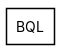
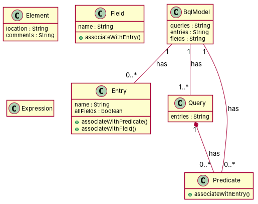

← all cases
D2/BQL — model qwen, condition B, run 1
1. Requirements (input)
R1: A BLQ model contains elements. Each element has a location and comments
R2: A BQL model has queries
R3: A BQL model has entries. Each entry has a name and a boolean attribute allFields
R4: A BQL model has fields. Each field has a name
R5: A predicate of some query
R6: An expression
R7: A BQL model contains queries and entries. Each query is composed of zero or more entries
R8: A BQL model has entries and fields. Each field is composed by one or more fields
R9: A BQL model has fields and entries. Each field is associated to exactly one entry
R10: A BQL model has predicates and entries. Each Predicate is associated to exactly one entry
2. Result 1 → Result 2 (ambiguity removal)
Red, struck-through: removed by ambiguity removal; green: added.
| classes (5 → 5) |
|---|
| BqlModel |
| Element |
| Entry |
| Predicate |
| Query |
| attributes (4 → 4) |
|---|
| Element.comment |
| Element.location |
| Entry.allfields |
| Entry.name |
| relations (5 → 5) |
|---|
| association: Predicate -> Entry |
| has: BqlModel -> Entry |
| has: BqlModel -> Predicate |
| has: BqlModel -> Query |
| has: Query -> Predicate |
3. Ambiguity tags
| id | req | type | cue | status | readings / explanation |
|---|
| A1 | R5 | quantifier | some | resolved | A predicate of a query; A predicate of some queries
The phrase 'of some query' is ambiguous and could mean either a single query or multiple queries. |
| A2 | R7 | quantifier | zero or more | resolved | Each query is composed of an entry; Each query is composed of zero or more entries
The phrase 'zero or more entries' is ambiguous and could mean that a query can be composed of one or more entries or none at all. |
| A3 | R8 | quantifier | one or more | resolved | Each field is composed by one or more fields; Each field is composed by a field
The phrase 'one or more fields' is ambiguous and could mean that a field is composed of multiple fields or a single field. |
4. Diagrams generated from the shared model
usecase diagram
class diagram
5. Code skeleton (Python; Java in code/java/)
"""Code skeleton generated from the shared model of D2/BQL.
Every class and method records the requirement(s) it traces to."""
from __future__ import annotations
import dataclasses as _dc
import enum as _enum
import typing as _t
@_dc.dataclass
class Element:
"""Source: R1"""
location: _t.Optional[str] = None
comments: _t.Optional[str] = None
@_dc.dataclass
class Entry:
"""Source: R3, R7, R9, R10"""
name: _t.Optional[str] = None
allFields: _t.Optional[bool] = None
def associateWithPredicate(self) -> None:
"""Operation."""
raise NotImplementedError
def associateWithField(self) -> None:
"""Operation."""
raise NotImplementedError
@_dc.dataclass
class Field:
"""Source: R4, R8, R9"""
name: _t.Optional[str] = None
def associateWithEntry(self) -> None:
"""Operation."""
raise NotImplementedError
@_dc.dataclass
class BqlModel:
"""Source: R2, R7, R8, R9, R10"""
queries: _t.Optional[str] = None
entries: _t.Optional[str] = None
fields: _t.Optional[str] = None
predicates: _t.List["Predicate"] = _dc.field(default_factory=list)
@_dc.dataclass
class Query:
"""Source: R7"""
entries: _t.Optional[str] = None
predicates: _t.List["Predicate"] = _dc.field(default_factory=list)
@_dc.dataclass
class Predicate:
"""Source: R5, R10"""
def associateWithEntry(self) -> None:
"""Operation."""
raise NotImplementedError
@_dc.dataclass
class Expression:
"""Source: R6"""
pass
6. Validation, checks and traceability
| python_compiles | True |
|---|
| java_compiles | True |
|---|
| attribute_mismatches | 0 |
|---|
| method_mismatches | 0 |
|---|
| use_cases | 0 |
|---|
| use_cases_without_actor | 0 |
|---|
| use_cases_without_method | 0 |
|---|
| actors_without_use_case | 0 |
|---|
| relations_to_unknown_class | 0 |
|---|
| inconsistencies | 0 |
|---|
| inconsistency_rate | 0.0 |
|---|
| requirement_coverage | 1.0 |
|---|
| validator fixes | |
|---|
| assumptions for open ambiguities | [] |
|---|
7. Scores against the reference
| element | P | R | F1 | TP/FP/FN |
|---|
| classes | 0.714 | 0.833 | 0.769 | 5/2/1 |
| attributes | 0.333 | 0.333 | 0.333 | 3/6/6 |
| relations | 0.25 | 0.167 | 0.2 | 1/3/5 |
| relations_strict | 0.25 | 0.167 | 0.2 | 1/3/5 |